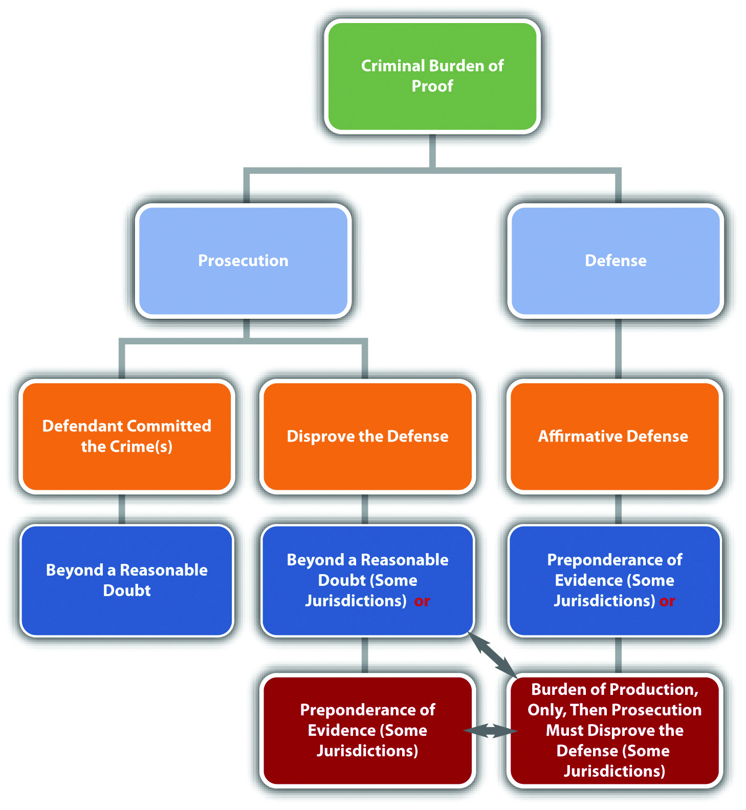
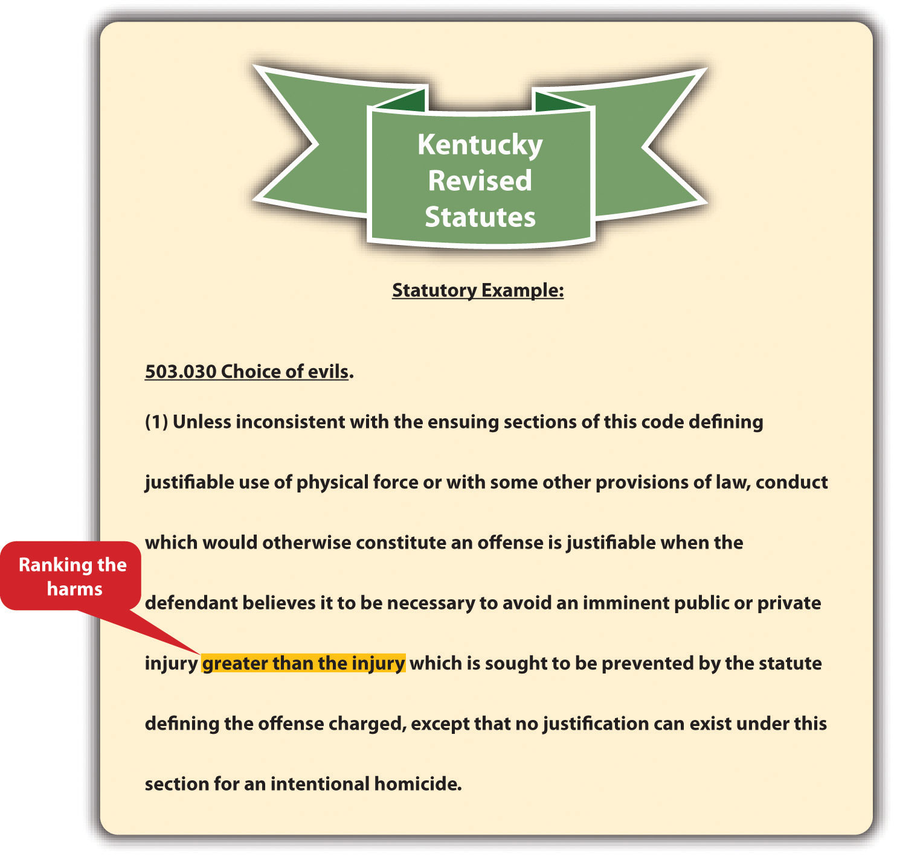
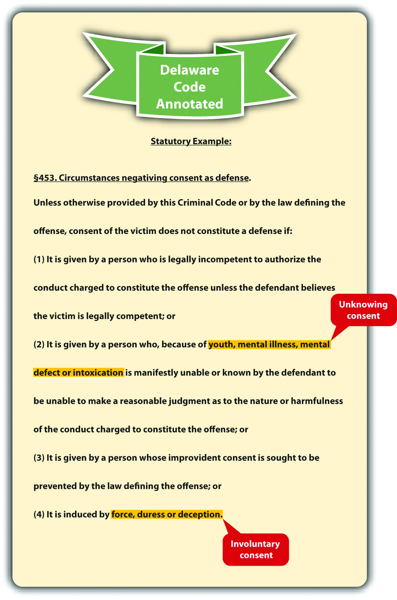

Source: Image courtesy of Tara Storm.
A person who unlawfully and by force enters or attempts to enter a person’s dwelling, residence, or occupied vehicle is presumed to be doing so with the intent to commit an unlawful act involving force or violence…
Fla. Stat. Ann. §776.013(4), cited in Section 5.3.3 "Defense of Habitation"
A plethora of criminal defenses exist. Defenses may completely exonerate the criminal defendant, resulting in an acquittal, or reduce the severity of the offense. Chapter 3 "Constitutional Protections" discussed defenses based on the federal Constitution. This chapter reviews the categorization of nonconstitutional criminal defenses, along with the elements of various defenses sanctioning the use of force.
Defenses can be categorized as denial or failure of proof, affirmative, imperfect, or perfect. Defenses can also be categorized as factual, legal, based on justification, or excuse. Lastly, defenses can be created by a court (common lawA defense created by a court.), or created by a state or federal legislature (statutoryA defense created by a state or federal legislature.).
As stated in Chapter 2 "The Legal System in the United States", a criminal defendant will be acquitted if the prosecution cannot prove every element of the offense beyond a reasonable doubt. In certain cases, the defendant can either deny that a criminal element(s) exists or simply sit back and wait for the prosecution to fail in meeting its burden of proof. This legal strategy is sometimes referred to as either a denial or failure of proof defenseThe defendant denies that an element of the offense exists and prevents the prosecution from meeting its burden of proof..
An affirmative defenseA defense that raises an issue separate from the elements of a crime. is not connected to the prosecution’s burden of proof. When the defendant asserts an affirmative defense, the defendant raises a new issue that must be proven to a certain evidentiary standard. State statutes often specify whether a defense is affirmative. The Model Penal Code defines an affirmative defense as a defense that is deemed affirmative in the Code or a separate statute, or that “involves a matter of excuse or justification peculiarly within the knowledge of the defendant” (Model Penal Code § 1.12 (3) (c)). Procedurally, the defendant must assert any affirmative defense before or during the trial, or the defense cannot be used as grounds for an appeal.
A fight breaks out at a party, and Juan is severely injured. Jasmine and Jerome are arrested and charged for battering Juan. Jerome claims that he did not touch Juan; someone else battered him. Jasmine claims that she did not batter Juan because she was legally defending herself against Juan’s attack. Jerome’s claim focuses on the elements of battery and asserts that these elements cannot be proven beyond a reasonable doubt. Technically, Jerome can do nothing and be acquitted if the prosecution fails to prove that he was the criminal actor. Jasmine’s self-defense claim is an affirmative defense. Jasmine must do something to be acquitted: she must prove that Juan attacked her to a certain evidentiary standard.
Figure 5.1 Denial and Affirmative Defenses

As stated in Chapter 2 "The Legal System in the United States", states vary as to their requirements for the defendant’s burden of proof when asserting an affirmative defense.Findlaw.com, “The Insanity Defense among the States,” findlaw.com website, accessed October 11, 2010, http://criminal.findlaw.com/crimes/more-criminal-topics/insanity-defense/the-insanity-defense-among-the-states.html. Different defenses also have different burdens of proof. Some states require the defendant to meet the burden of production, but require the prosecution to thereafter meet the burden of persuasion, disproving the defense to a preponderance of evidence, or in some states, beyond a reasonable doubt. Other states require the defendant to meet the burden of production and the burden of persuasion. In such states, the defendant’s evidentiary standard is preponderance of evidence, not beyond a reasonable doubt. In the example given in Section 5 "Example of an Affirmative Defense", for Jasmine’s self-defense claim, Jasmine must prove she was defending herself by meeting either the burden of production or the burden of production and persuasion to a preponderance of evidence, depending on the jurisdiction.
Figure 5.2 Diagram of the Criminal Burden of Proof
As stated previously, a defense can reduce the severity of the offense, or completely exonerate the defendant from criminal responsibility. If a defense reduces the severity of the offense, it is called an imperfect defenseA defense that reduces the severity of the offense.. If a defense results in an acquittal, it is called a perfect defenseA defense that results in an acquittal if successful.. The difference between the two is significant. A defendant who is successful with an imperfect defense is still guilty of a crime; a defendant who is successful with a perfect defense is innocent.
LuLu flies into a rage and kills her sister Lola after she catches Lola sleeping with her fiancé. LuLu is thereafter charged with first-degree murder. LuLu decides to pursue two defenses. First, LuLu claims that the killing should be manslaughter rather than first-degree murder because she honestly but unreasonably believed Lola was going to attack her, so she thought she was acting in self-defense. Second, LuLu claims she was insane at the time the killing occurred. The claim of manslaughter is an imperfect defense that will reduce LuLu’s sentence, but will not acquit her of criminal homicide. The claim of insanity is a perfect defense that will result in an acquittal.
A defense must be based on specific grounds. If a defense is based on an issue of fact, it is a factual defenseA defense based on an issue of fact.. If a defense is based on an issue of law, it is a legal defenseA defense based on an issue of law..
Armando is charged with the burglary of Roman’s residence. Armando decides to pursue two defenses. First, Armando claims that he was with Phil on the date and time of the burglary. This is called an alibi defenseA factual defense that claims the defendant was somewhere else when the crime occurred.. Second, Armando claims that it is too late to prosecute him for burglary because of the expiration of the statute of limitationsA legal defense that claims too much time has elapsed since the defendant committed the crime, so the prosecution can no longer legally prosecute the defendant.. Armando’s alibi defense is a factual defense; it is based on the fact that Armando could not have committed the burglary because he was somewhere else at the time it occurred. Armando’s statute of limitations defense is a legal defense because it is based on a statute that limits the amount of time the government has to prosecute Armando for burglary.
With the exception of alibi, most affirmative defenses are based on either justificationThe basis for an affirmative defense that claims criminal conduct is justified under the circumstances. or excuseThe basis for an affirmative defense that claims the defendant should be excused for his or her conduct.. Typically, justification and excuse defenses admit that the defendant committed the criminal act with the requisite intent, but insist that the conduct should not be criminal.
A defense based on justification focuses on the offense. A justification defense claims that the defendant’s conduct should be legal rather than criminal because it supports a principle valued by society. A defense based on excuse focuses on the defendant. An excuse defense claims that even though the defendant committed the criminal act with criminal intent, the defendant should not be responsible for his or her behavior.
Review the examples of affirmative, imperfect, and perfect defenses given in Section 5.1.1 "Categorization of Defenses". Jasmine’s self-defense claim is based on justification. Society believes that individuals should be able to protect themselves from harm, so actions taken in self-defense are justified and noncriminal. Note that a self-defense claim focuses on the offense (battery) in light of the circumstances (to prevent imminent harm). LuLu’s insanity claim is based on excuse. Although LuLu killed Lola with criminal intent, if LuLu is truly insane it is not be fair or just to punish her for her behavior. Note that an insanity claim focuses on the defendant (a legally insane individual) and whether he or she should be criminally responsible for his or her conduct.
Table 5.1 Categorization of Defenses
| Defense Type | Characteristics |
|---|---|
| Common-law | Created by a court |
| Statutory | Created by a state or federal legislature |
| Denial or failure of proof | Creates doubt in one or more elements of the offense and prevents the prosecution from meeting its burden of proof |
| Affirmative | Raises an issue separate from the elements of the offense |
| Imperfect | Reduces the severity of the offense |
| Perfect | Results in an acquittal |
| Factual | Based on an issue of fact |
| Legal | Based on an issue of law |
| Alibi | Asserts that the defendant was somewhere else when the crime was committed |
| Expiration of the statute of limitations | Asserts that it is too late for the government to prosecute the defendant for the crime |
| Justification | Claims that the criminal conduct is justified under the circumstances |
| Excuse | Claims that the defendant should be excused for his or her conduct |
Answer the following questions. Check your answers using the answer key at the end of the chapter.
As stated previously, self-defenseA defense based on justification that allows a defendant to use a reasonable degree of force to defend against an imminent attack. is a defense based on justification. Self-defense can be a defense to assault, battery, and criminal homicide because it always involves the use of force. In the majority of states, self-defense is a statutory defense.Mich. Comp. Laws § 780.972, accessed November 13, 2010, http://www.legislature.mi.gov/(S(3li5rs55kkzn2pfegtskdunn))/mileg.aspx?page=getObject&objectName=mcl-780-972&highlight=self-defense. However, it can be modified or expanded by courts on a case-by-case basis.
Most states have special requirements when the defendant uses deadly forceForce that can produce death. in self-defense. Deadly force is defined as any force that could potentially kill. An individual does not have to actually die for the force to be considered deadly. Examples of deadly force are the use of a knife, gun, vehicle, or even bare hands when there is a disparity in size between two individuals.
Self-defense can operate as a perfect or imperfect defense, depending on the circumstances. Defendants who commit criminal homicide justified by self-defense can be acquitted, or have a murder charge reduced from first to second or third degree, or have a charge reduced from murder to manslaughter. Criminal homicide is discussed in detail in Chapter 9 "Criminal Homicide".
To successfully claim self-defense, the defendant must prove four elements. First, with exceptions, the defendant must prove that he or she was confronted with an unprovoked attack. Second, the defendant must prove that the threat of injury or death was imminent. Third, the defendant must prove that the degree of force used in self-defense was objectively reasonable under the circumstances. Fourth, the defendant must prove that he or she had an objectively reasonable fear that he or she was going to be injured or killed unless he or she used self-defense. The Model Penal Code defines self-defense in § 3.04(1) as “justifiable when the actor believes that such force is immediately necessary for the purpose of protecting himself against the use of unlawful force by such other person on the present occasion.”
In general, if the defendant initiates an attack against another, the defendant cannot claim self-defense.State v. Williams, 644 P.2d 889 (1982), accessed November 13, 2010, http://scholar.google.com/scholar_case?case=18157916201475630105&hl=en&as_sdt=2&as_vis=1&oi=scholarr. This rule has two exceptions. The defendant can be the initial aggressor and still raise a self-defense claim if the attacked individual responds with excessive force under the circumstances, or if the defendant withdraws from the attack and the attacked individual persists.
In some jurisdictions, an individual cannot respond to the defendant’s attack using excessive force under the circumstances.State v. Belgard, 410 So.2d 720 (1982), accessed November 13, 2010, http://www.leagle.com/xmlResult.aspx?xmldoc=19821130410So2d720_1997.xml&docbase=CSLWAR1-1950-1985. For example, an individual cannot use deadly force when the defendant initiates an attack using nondeadly force. If an individual does resort to deadly force with a nondeadly force attack, the defendant can use reasonable force in self-defense.
Patty and Paige get into an argument over a loan Patty made to Paige. Paige calls Patty a spoiled brat who always gets her way. Patty slaps Paige across the face. Paige grabs a carving knife from the kitchen counter and tries to stab Patty. Patty wrestles the knife away and stabs Paige in the chest, killing her. In this example, Patty provoked the attack by slapping Paige across the face. However, the slap is nondeadly force. In many jurisdictions, Paige cannot respond to nondeadly force with deadly force, like a knife. Paige used excessive force in her response to Patty’s slap, so Patty can use deadly force to defend herself and may not be responsible for criminal homicide under these circumstances.
In some jurisdictions, the defendant can be the initial aggressor and still use force in self-defense if the defendant withdraws from the attack, and communicates this withdrawal to the attacked individual.N.Y. Penal Law § 35.15(1)(b), accessed November 13, 2010, http://law.onecle.com/new-york/penal/PEN035.15_35.15.html. If the attacked individual persists in using force against the defendant after the defendant’s withdrawal, rather than notifying law enforcement or retreating, the defendant is justified in using force under the circumstances.
Change the excessive force exception example in Section 5 "Example of the Excessive Force Exception". Imagine that after Patty slaps Paige across the face, Paige begins pounding Patty with her fists. Patty manages to escape and runs into the garage. She huddles against the garage wall. Paige chases Patty into the garage. Patty says, “Please, please don’t hurt me. I’m sorry I slapped you.” Paige kicks Patty in the back. Patty turns around and karate chops Paige in the neck, rendering her unconscious. In many jurisdictions, Patty’s karate chop is lawful under a theory of self-defense because she completely withdrew from the attack. Thus Patty is probably not criminally responsible for battery, based on the karate chop to the neck. However, Patty could be criminally responsible for battery based on the slap to Paige’s face because this physical contact was unprovoked and not defensive under the circumstances.
Figure 5.3 New York Penal Law

The defendant cannot use any degree of force in self-defense unless the defendant is faced with an imminent attack.State v. Taylor, 858 P.2d 1358 (1993), accessed November 13, 2010, http://scholar.google.com/scholar_case?case=1539441759711884447&hl=en&as_sdt=2&as_vis=1&oi=scholarr. Imminent means the attack is immediate and not something that will occur in the future. If the defendant is threatened with a future attack, the appropriate response is to inform law enforcement, so that they can incapacitate the threatening individual by arrest or prosecution. Another situation where imminence is lacking is when the attack occurred in the past. When the defendant uses force to remedy a previous attack, this is retaliatory, and a self-defense claim is not appropriate. The legal response is to inform law enforcement so that they can incapacitate the attacker by arrest or prosecution.
Some state courts have expanded the imminence requirement to include situations where a husband in a domestic violence situation uses force or violence regularly against the defendant, a battered wife, therefore creating a threat of imminent harm every day.Bechtel v. State, 840 P.2d 1 (1992), accessed November 13, 2010, http://scholar.google.com/scholar_case?case=14171263417876785206&hl=en&as_sdt=2&as_vis=1&oi=scholarr. If a jurisdiction recognizes the battered wife defenseA defense that allows a wife who is a victim of spousal abuse to use force in self-defense under certain circumstances even if an attack is not imminent., the defendant—the battered wife—can legally use force against her abusive husband in self-defense in situations where harm is not necessarily immediate.
Vinny tells Fiona that if she does not pay him the $1,000 she owes him, he will put out a contract on her life. Fiona pulls out a loaded gun and shoots Vinny. Fiona cannot successfully argue self-defense in this case. Vinny’s threat was a threat of future harm, not imminent harm. Thus Fiona had plenty of time to contact law enforcement to help protect her safety.
Dwight and Abel get into a fist fight. Dwight knocks Abel unconscious. Dwight observes Abel for a few minutes, and then he picks up a large rock and crushes Abel’s skull with it, killing him. Dwight cannot claim self-defense in this situation. Once Dwight realized that Abel was unconscious, he did not need to continue to defend himself against an imminent attack. Dwight’s conduct appears retaliatory and is not justified under these circumstances.
Spike severely beats and injures his wife Veronica every couple of days. Spike’s beatings have become more violent, and Veronica starts to fear for her life. One night, Veronica shoots and kills Spike while he is sleeping. In states that have expanded self-defense to include the battered wife defense, Veronica may be successful on a theory of self-defense.
Dr. Alan J. Lipman Catherine Crier on Winkler Spousal Abuse Murder Trial
Mary Winkler claimed the battered wife defense as an imperfect defense to the murder of her husband, a pastor.Mara Gay, “Abused Wife Who Killed Preacher Husband Speaks Out,” Huffingtonpost.com website, accessed August 25, 2011, http://www.aolnews.com/2010/11/05/abused-wife-who-killed-preacher-husband-speaks-out.
The defendant cannot claim self-defense unless the degree of force used is objectively reasonable under the circumstances. This requirement primarily focuses on the use of deadly force and when it is legally justified. In general, deadly force can by employed in self-defense when a reasonable person feels threatened with imminent death, serious bodily injury, and, in some jurisdictions, a serious felony.Or. Rev. Stat. § 161.219, accessed November 13, 2010, http://www.leg.state.or.us/ors/161.html. Serious bodily injury and serious felony are technical terms that are defined in a statute or case, depending on the jurisdiction. The Model Penal Code states that deadly force is not justifiable “unless the actor believes that such force is necessary to protect himself against death, serious bodily harm, kidnapping or sexual intercourse compelled by force or threat” (Model Penal Code § 3.04(2)(b)).
Nicholas, an intruder, pins Wanda to the floor of her garage and begins to forcibly remove her clothing. Wanda feels around the floor with her hand and finds a screwdriver. She plunges the screwdriver into Nicholas’s neck, killing him. Wanda has used appropriate force and can claim self-defense in most jurisdictions. A reasonable person in Wanda’s situation would feel deadly force is necessary to repel Nicholas’s sexual assault. Nicholas’s attack is a serious felony that could result in serious bodily injury or death. Thus the use of deadly force is legally justified under these circumstances.
Early common law stated that the defendant had a duty to retreat to the wallA common-law doctrine that requires a defendant to retreat if it is safe to do so, before using deadly force in self-defense. before using deadly force against an attacker. The majority of states have rejected this doctrine and instead allow the defendant to stand his or her groundA doctrine that allows a defendant to use deadly force in self-defense if appropriate, rather than retreating. if the defendant is not the initial aggressor in the confrontation.State v. Sandoval, 130 P.3d 808 (2006), accessed November 13, 2010, http://www.publications.ojd.state.or.us/S53457.htm. In jurisdictions that still follow the retreat doctrine, the defendant must retreat if there is an objectively reasonable belief that the attacker will cause death or serious bodily injury, and a retreat won’t unreasonably increase the likelihood of death or serious bodily injury.Connecticut Criminal Jury Instructions, No. 2.8-3, accessed November 13, 2010, http://www.jud.ct.gov/ji/criminal/part2/2.8-3.htm. The Model Penal Code defines the duty to retreat by stating that the use of deadly force is not justifiable if “the actor knows that he can avoid the necessity of using such force with complete safety by retreating” (Model Penal Code § 3.04 (2) (b) (ii)). An established exception to the retreat doctrine in jurisdictions that follow it is the defense of the home, which is called the castle doctrine. The castle doctrine is discussed shortly.
Sandy and Sue have an argument in the park. Sue pulls a knife out of a sheath that is strapped to her leg and begins to advance toward Sandy. Sandy also has a knife in her pocket. In a state that follows the retreat doctrine, Sandy must attempt to escape, if she can do so safely. In a state that follows the stand-your-ground doctrine, Sandy can defend herself using her own knife and claim lawful self-defense. Note that Sandy was not the initial aggressor in this situation. If Sandy pulled a knife first, she could not use the knife and claim self-defense, whether the state follows the stand-your-ground doctrine or the duty to retreat doctrine.
The defendant cannot claim self-defense unless a reasonable person in the defendant’s situation would believe that self-defense is necessary to avoid injury or death. If the defendant honestly but unreasonably believes self-defense is necessary under the circumstances, a claim of imperfect self-defenseAn imperfect defense available when the defendant has an honest but unreasonable belief that force is necessary to defend against injury or death. may reduce the severity of the offense.State v. Faulkner, 483 A.2d 759 (1984), accessed November 13, 2010, http://scholar.google.com/scholar_case?case=17158253875987176431&hl=en&as_sdt=2&as_vis=1&oi=scholarr. However, the defendant is still guilty of a crime, albeit a less serious crime.
Justin, who weighs over two hundred pounds and is six feet tall, accidentally bumps into Wanda, a slender ten-year-old child. Wanda spins around and shakes her fist at Justin. Justin responds by shoving Wanda so hard that she crashes into a telephone pole and is killed. Justin probably cannot claim self-defense under these circumstances. A reasonable person would not believe Wanda is about to seriously injure or kill Justin. Thus Justin’s response is unnecessary and unjustified in this case.
Change the unjustified conduct example given in Section 5 "Example of Unjustified Conduct". Imagine that a slender, female ten-year-old severely abused Justin when he was younger. Since the abusive incident, Justin has an unreasonable fear of female children and honestly believes that they can and will hurt him if provoked. If the trier of fact determines that Justin honestly but unreasonably believed that Wanda was about to inflict serious bodily injury or kill him, any charge of murder could be reduced to manslaughter on a theory of imperfect self-defense.
Answer the following questions. Check your answers using the answer key at the end of the chapter.
Were They Entitled to a Jury Instruction on Imperfect Self-Defense?
Read Menendez v. Terhune, 422 F.3d 1012 (2005). The case is available at this link: http://cases.justia.com/us-court-of-appeals/F3/422/1012/569492.
Lyle and Eric Menendez were tried and convicted of murder and conspiracy to commit murder of their parents. There were two series of trials. The first trial, which had two separate juries, resulted in two hung juries. At the first trial, the brothers introduced evidence of sexual abuse by their father, and the court instructed the jury on imperfect self-defense. The imperfect self-defense jury instruction was based on the brothers’ honest but unreasonable fear that their father would hurt or kill them.Menendez v. Terhune, 422 F.3d 1012, 1024 (2005), accessed November 19, 2010, http://cases.justia.com/us-court-of-appeals/F3/422/1012/569492. The second trial took place in front of one jury and resulted in the convictions. During the second trial, some evidence of abuse was excluded, Lyle Menendez refused to testify, and there was no jury instruction on imperfect self-defense. After sentencing, the brothers petitioned for a writ of habeas corpus based on several claims, including the exclusion of the abuse evidence and failure to instruct the jury on imperfect self-defense.Menendez v. Terhune, 422 F.3d 1012, 1016 (2005), accessed November 19, 2010, http://cases.justia.com/us-court-of-appeals/F3/422/1012/569492. The US Court of Appeals for the Ninth Circuit affirmed the district court’s denial of the petition on grounds that there was insufficient evidence to support the jury instruction on imperfect self-defense and no foundation to support the admissibility of the evidence of abuse. The court held that the evidence confirmed there was no imminent threat of serious bodily injury or death when the brothers killed their parents.
The facts of the case are lurid. Evidence included the sexual abuse of both boys by their father, surreptitiously taped psychotherapy sessions, spending sprees, fabricated mafia hit stories, and alleged will tampering by the brothers after the parents were killed.
Check your answer using the answer key at the end of the chapter.
Lyle and Erik Menendez News Report
A news story on the conviction of the Menendez brothers is presented in this video:
Aside from self-defense, a defendant can legally use force to defend another person, real or personal property, and habitation. In addition, law enforcement can use force to arrest or capture individuals who reasonably appear to be committing crimes. In this section, the elements of several use-of-force defenses will be reviewed. Keep in mind that these defenses can be statutory, common-law, perfect, or imperfect, depending on the facts and the jurisdiction.
According to early common law, a defendant could use force to defend another only when the defendant and the person defended had a special relationship, such as a family connection. Most jurisdictions now reject this common-law restriction on defense of others and allow a defendant to defend anyone to the same degree that he or she could use self-defense.People v. Kurr, 654 N.W.2d 651 (2002), accessed November 14, 2010, http://scholar.google.com/scholar_case?case=14992698629411781257&hl=en&as_sdt=2&as_vis=1&oi=scholarr. Thus in a majority of jurisdictions, defense of othersA defense that allows a defendant to defend another to the same degree he or she could defend himself or herself. requires the same elements as self-defense: the individual defended must be facing an unprovoked, imminent attack, and the defendant must use a reasonable degree of force with a reasonable belief that force is necessary to repel the attack.
Occasionally, a defendant uses force to defend another who has no legal right to use force in self-defense. Under the common law, the defendant could not use force legally if the individual defended could not use force legally in self-defense. However, the majority of states now allow a defendant to use force to defend another person if it reasonably appears that use of force is justified under the circumstances.Commonwealth v. Miranda, No. 08-P-2094 (2010), accessed November 14, 2010, http://www.socialaw.com/slip.htm?cid=19939&sid=119. The Model Penal Code allows the defense of another when “under the circumstances as the actor believes them to be, the person whom he seeks to protect would be justified in using such protective force” (Model Penal Code § 3.05(1) (b)). Thus if the defendant has a subjective belief that the individual defended could use force legally in self-defense, defense of others is appropriate under the Model Penal Code.
Alex and Shane, aspiring law enforcement officers, are performing a training maneuver in a rural area. Their instructor Devin is watching nearby. Alex pretends to attack Shane. Just as Devin is about to demonstrate a takedown, Timmy, who is jogging in the area, dashes over and begins beating Alex. Under the older common-law rule, Timmy could be successfully prosecuted for battery of Alex. Shane did not have the right to use self-defense during a practice maneuver, so neither did Timmy. In jurisdictions that allow defense of others if it reasonably appears that self-defense is warranted, Timmy could probably use the defense to battery because it reasonably appeared that Alex was about to unlawfully attack Shane. In jurisdictions that follow the Model Penal Code, Timmy can most likely use defense of others as a defense to battery because it is clear Timmy honestly believed Shane had the right to use self-defense in this situation.
All jurisdictions allow individuals to use force in defense of propertyA defense that allows a defendant to defend real or personal property using nondeadly force. under certain specified circumstances. Property can be real or personal. Real propertyLand and anything permanently attached to it. is land and anything permanently attached to it. This includes a home. However, defense of the home is discussed in Section 5.3.3 "Defense of Habitation". Personal propertyMovable objects. is any movable object.
In the majority of states, the defendant can use force only to defend real or personal property if the defendant has an objectively reasonable belief that an imminent threat of damage, destruction, or theft will occur.California Criminal Jury Instructions No. 3476, accessed November 15, 2010, http://www.justia.com/criminal/docs/calcrim/3400/3476.html. The Model Penal Code provides “the use of force upon or toward the person of another is justifiable when the actor believes that such force is immediately necessary: (a) to prevent or terminate an unlawful entry or other trespass upon land or a trespass against or the unlawful carrying away of tangible, movable property” (Model Penal Code §3.06(1) (a)). Thus if the defendant has a subjective belief that force is immediately necessary to protect real or personal property, force is appropriate under the Model Penal Code.
The amount of force that a defendant may legally use to protect real or personal property is reasonable force, under the circumstances.K.S.A. § 21-3213, accessed November 15, 2010, http://kansasstatutes.lesterama.org/Chapter_21/Article_32/21-3213.html. The defendant can also chase someone who steals personal property and take the item back.Conn. Gen. Stat. § 53a-21, accessed November 15, 2010, http://www.cga.ct.gov/2009/pub/chap951.htm#Sec53a-21.htm. The Model Penal Code provides “the use of force upon or toward the person of another is justifiable when the actor believes that such force is immediately necessary…to retake tangible movable property” (Model Penal Code §3.06(1) (b)). In general, the Model Penal Code and most states do not authorize the use of deadly force to protect property (other than the home) under any circumstances.Fla. Stat. Ann. § 776.031, accessed November 16, 2010, http://law.justia.com/florida/codes/2007/TitleXLVI/chapter776/776_031.html.
Kelsey sees Keith, her stepbrother, approaching her brand new car with a key in his hand. It appears that Keith is about to scrape the paint on the door of the car with this key. Kelsey tackles Keith to prevent him from vandalizing the car. Kelsey has probably used reasonable force under the circumstances and can claim defense of property as a defense to battery. If Keith testifies that he was simply going to hand Kelsey the key, which she left in the house, the attack could still be justified if the trier of fact determines that it was objectively reasonable for Kelsey to believe Keith was about to damage her property. In jurisdictions that follow the Model Penal Code, Kelsey can probably use defense of property as a defense to battery because it is clear Kelsey believed that force was immediately necessary to protect her personal property in this situation. Of course, if Kelsey pulls out a gun and shoots Keith, she could not claim defense of property because deadly force is never justifiable to protect real or personal property from harm.
A simple trespasser is an individual who is present on real property without consent of the owner. Property owners have the legal right to eject trespassers under certain specified circumstances.
Most states authorize the ejection of a trespasser if the trespasser is first asked to leave and fails to comply within a reasonable time.N.J. Stat. § 2C:3-6, accessed November 15, 2010, http://law.onecle.com/new-jersey/2c-the-new-jersey-code-of-criminal-justice/3-6.html. The degree of force that can be used to eject the trespasser is reasonable force, under the circumstances.Iowa Code § 704.4, accessed November 15, 2010, http://coolice.legis.state.ia.us/cool-ice/default.asp?category=billinfo&service=iowacode&ga=83&input=704#704.4. Deadly force is never reasonable to eject a trespasser unless the trespasser threatens imminent deadly force against the defendant or another individual.State v. Curley, Docket # 0000011.WA (Wash. App. 2010), accessed November 15, 2010, http://scholar.google.com/scholar_case?case=11648057948374905030&q= State+v.+Curley&hl=en&as_sdt=2,5&as_ylo=2009. Deadly force under these circumstances is justified by self-defense or defense of others, not ejection of trespasser.
Sam sees Burt sitting on his lawn. Sam goes up to Burt and asks him to “move along.” Burt looks up, but does not stand. Sam goes into the house and calls law enforcement, but they inform Sam that there is a local emergency, and they cannot come and eject Burt for at least five hours. Sam goes back outside and sees that Burt is now sprawled out across the lawn. Sam grabs Burt, lifts him to his feet, and pushes him off the lawn and onto the sidewalk. Sam can probably use ejection of trespasser as a defense to battery of Burt. Sam asked Burt the trespasser to leave, and Burt ignored him. Sam’s attempt to rely on law enforcement was likewise unsuccessful. Sam’s use of nondeadly force appears objectively reasonable. Thus Sam’s ejection of a trespasser is most likely appropriate under these circumstances.
Defense of habitationA defense that allows the defendant to defend the home using deadly force if he or she has an objectively reasonable fear that an intruder will cause serious bodily injury or death to the home’s occupants. is a defense that applies specifically to the defendant’s residence. At early common law, a person’s home was as sacred as his or her person, and deadly force could be employed to protect it. The majority of states have since enacted modern castle lawsModern laws that allow the use of deadly force in defense of habitation. that embody this common-law doctrine. Other than the use of deadly force, defense of habitation generally follows the same rules as defense of property, self-defense, and defense of others. Thus this defense of habitation discussion focuses primarily on the use of deadly force.
The first state to expand the defense of habitation to include the use of deadly force was Colorado, with its “make my day” self-defense statute.Colo. Rev. Stat. Ann. § 18-1-704.5, accessed November 16, 2010, http://www.co.jefferson.co.us/jeffco/sheriff_uploads/revised_statutes.htm. In 2005, Florida began a wave of castle law modifications that resulted in most states revising their defense of habitation laws.Fla. Stat. Ann. § 776.013, accessed November 16, 2010, http://law.onecle.com/florida/crimes/776.013.html. Generally, three elements must be present before the use of deadly force is appropriate to defend habitation under modern castle laws. First, the intruder must actually enter or be in the process of entering the residence owned by the defendant.Fla. Stat. Ann. § 776.013, accessed November 16, 2010, http://law.onecle.com/florida/crimes/776.013.html. This excludes intruders who are outside or in the curtilageThe protected area around the home that is usually not included in defense of habitation., which is the protected area around the home. Second, the residence must be occupied when the entry occurs. This excludes devices like spring-gunsDevice that is designed to shoot an intruder when a home is entered. that protect unoccupied dwellings with deadly force.People v. Ceballos, 526 P.2d 241 (1974), accessed November 16, 2010, http://wings.buffalo.edu/law/bclc/web/calceballos.htm. Third, the defendant must have an objectively reasonable belief that the intruder intends to commit a crime of violence against the occupant(s) after entry.Or. Rev. Stat. § 161.225, accessed November 16, 2010, http://www.leg.state.or.us/ors/161.html. The Model Penal Code provides “[t]he use of deadly force is not justifiable…unless the actor believes that…the person against whom the force is used is attempting to dispossess him of his dwelling…or…attempting to commit…arson, burglary, robbery or other felonious theft…and either…has employed or threatened deadly force…or…the use of force other than deadly force would expose the actor or another in his presence to substantial danger of serious bodily harm” (Model Penal Code § 3.06 (3)(d)).
The majority of states’ castle laws abolish any duty to retreat when inside the home.Alaska Stat. § 11.81.335(b), accessed November 16, 2010, http://touchngo.com/lglcntr/akstats/Statutes/Title11/Chapter81/Section335.htm. Florida’s castle law creates a presumption that the defendant has a reasonable fear of imminent peril of death or great bodily injury when the intruder makes an unlawful or forceful entry.Fla. Stat. Ann. § 776.013, accessed November 16, 2010, http://law.onecle.com/florida/crimes/776.013.html. This compels the prosecution to disprove the defendant’s reasonable belief of death or great bodily injury beyond a reasonable doubt, which is extremely difficult. Additional features of many castle laws are civil immunityThe defendant cannot be sued for damages. and criminal immunityThe defendant cannot be prosecuted for a crime. from prosecution.720 ILCS § 5/7-2 (b), accessed November 16, 2010, http://www.ilga.gov/legislation/ilcs/ilcs4.asp?DocName=072000050HArt.+7&ActID=1876&ChapAct=720. Immunity from prosecution means that a defendant who complies with the castle law requirements cannot be sued for damages or prosecuted for a crime based on injury or death to the intruder.
Figure 5.4 Crack the Code

Nate, a homeowner with three children, hears the front door open in the middle of the night. Nate removes a handgun from the nightstand and creeps silently down the stairs. He sees Bob tiptoeing toward his daughter’s bedroom. Nate shoots and kills Bob. Unfortunately, Bob is Nate’s daughter’s boyfriend, who was trying to enter her bedroom for a late-night get-together. Nate could probably assert the defense of protection of habitation under modern castle laws in most jurisdictions. Bob made entry into an occupied residence. It is difficult to identify individuals in the dark and to ascertain their motives for entering a residence without the owner’s consent. Thus it was objectively reasonable for Nate to feel threatened by Bob’s presence and to use deadly force to protect his domicile and its residents. If Nate is successful with his defense, he will also be immune from a civil suit for damages if the castle law in his jurisdiction provides this immunity.
Change the example with Nate and Bob so that Bob enters the residence during the day, and Nate identifies him as his daughter’s boyfriend. Under these circumstances, the prosecution could rebut any presumption that Nate’s actions were objectively reasonable. A reasonable person would ask Bob why he was entering the residence before shooting and killing him. The trier of fact might determine that Nate’s intent was not to protect himself and his family, but to kill Bob, which would be malice aforethought. If Nate’s actions are not justifiable by the defense of habitation, he could be charged with and convicted of first-degree murder in this situation.
Occasionally, law enforcement must use force to effectuate an arrest or apprehend a criminal suspect. The appropriate use of force during an arrest or apprehension can operate as a defense to assault, battery, false imprisonment, kidnapping, and criminal homicide. At early common law, law enforcement could use reasonable, nondeadly force to arrest an individual for a misdemeanor and reasonable, even deadly force, to arrest an individual for any felony. Modern law enforcement’s ability to use deadly force is governed by the US Constitution.
The US Supreme Court clarified the constitutional standard for law enforcement’s use of deadly force in Tennessee v. Garner, 471 U.S. 1 (1985). In Garner, the Court invalidated a Tennessee statute that allowed law enforcement to exercise any degree of force to apprehend and arrest a fleeing felon. The law enforcement officer in Garner admitted that he shot and killed a suspect, reasonably believing he was unarmed. The Court held that the Fourth Amendment governed law enforcement’s use of deadly force in this situation because the use of deadly force is a seizure. Thus law enforcement’s use of deadly force must be scrutinized pursuant to the standard of constitutional reasonableness. According to the Court, the only constitutionally reasonable circumstances under which law enforcement can use deadly force to arrest or apprehend a fleeing felon is when law enforcement has probable cause to believe that the suspect poses a significant threat of death or serious physical injury to the officer or others.
Currently, most jurisdictions have statutes protecting law enforcement’s reasonable use of force when effectuating an arrest or apprehending a fleeing suspect. Under Garner, these statutes must restrict the lawful use of deadly force to potentially deadly situations. If a law enforcement officer exceeds the use of force permitted under the circumstances, the law enforcement officer could be prosecuted for a crime or sued for civil damages (or both).
Review the example in Chapter 1 "Introduction to Criminal Law", Section 1.2.1 "Example of Criminal Law Issues". In that example, Linda puts a bra in her purse without paying for it at an expensive department store. When she attempts to leave the store, an alarm is activated. Linda begins sprinting down the street. Colin, a police officer, just happens to be driving by with the window of his patrol car open. He hears the store alarm, sees Linda running, and begins shooting at Linda from the car. Linda is shot in the leg and collapses. In this example, no facts exist to indicate that Linda poses a potentially deadly threat to Colin or others. The fact that Linda is running down the street and an alarm is going off does not demonstrate that Linda has committed a crime necessitating deadly force to arrest. Thus Colin can use only nondeadly force to arrest Linda, such as his hands, or possibly a stun gun or Taser to subdue her. If Linda is unarmed and Colin uses a firearm to subdue her, the utilization of deadly force is excessive under these circumstances and Colin has no defense to assault with a deadly weapon or to attempted murder.
Change this example and imagine that Colin pulls over and attempts to arrest Linda. Linda removes a gun from her purse. Under most modern statutes, Colin does not have a duty to retreat and can use deadly force to arrest or apprehend Linda. Under Garner, it is reasonable to believe that Linda poses a danger of death or serious bodily injury to Colin or others. Thus Colin can constitutionally use deadly force to protect himself and the public from harm in this situation. Note that Linda’s theft is probably a misdemeanor, not a felony. However, it is Linda’s exhibition of deadly force to resist arrest that triggers Colin’s deadly force response. Under these circumstances, Colin’s use of deadly force is justified and can operate as a legal defense in a criminal prosecution or civil suit for damages.
Figure 5.5 Diagram of Use-of-Force Defenses

Answer the following questions. Check your answers using the answer key at the end of the chapter.
Occasionally, the law protects a defendant from criminal responsibility when the defendant has no choice but to commit the crime. In this section, we review the choice of evils and duress defenses.
The choice of evils defenseA defense that allows a defendant to choose to commit a crime to avoid a greater, imminent harm. This defense is called the necessity defense in some jurisdictions. (called the necessity defense in some jurisdictions) protects a defendant from criminal responsibility when the defendant commits a crime to avoid a greater, imminent harm. Under the Model Penal Code, “[c]onduct which the actor believes to be necessary to avoid harm or evil…is justifiable, provided that: (a) the harm or evil sought to be avoided by such conduct is greater than that sought to be prevented by the law defining the offense charged” (Model Penal Code § 3.02(1)(a)). The choice of evils defense can be statutory or common-law, perfect or imperfect, depending on the jurisdiction.
The choice of evils defense generally requires three elements. First, there must be more than one harm that will occur under the circumstances. Usually, the harms are the product of nature, or are circumstances beyond the defendant’s control.State v. Holmes, 129 Ohio Misc. 2d 38 (2004), accessed November 22, 2010, http://www.sconet.state.oh.us/rod/docs/pdf/98/2004/2004-ohio-7334.pdf. Second, the harms must be ranked, with one of the harms ranked more severe than the other. The ranking is generally up to the legislature or common law. In many jurisdictions, the loss of life is never justifiable under this defense and cannot be ranked lower than any other harm.Ky. Rev. Stat. Ann. § 503.030, accessed November 22, 2010, http://www.lrc.ky.gov/krs/503-00/030.PDF. Third, the defendant must have an objectively reasonable belief that the greater harm is imminent and can only be avoided by committing the crime that results in the lesser harm.Tenn. Code Ann. § 39-11-609, accessed November 22, 2010, http://www.michie.com/tennessee/lpext.dll?f=templates&fn=main-h.htm&cp=tncode.
Figure 5.6 Kentucky Revised Statutes
The choice of evils defense is rarely used and is generally only a defense to the loss or destruction of property. When the defense is perfect, it results in an acquittal. When the defense is imperfect, it results in a reduction in sentence or the defendant’s conviction of a lesser offense.
Tamara gets lost while hiking in a remote, mountainous area. After wandering around for hours with the temperature dropping, Tamara finds a locked cabin. Tamara breaks a window and climbs inside. Once inside, Tamara prepares some canned chili, drinks tap water, and uses the telephone to call law enforcement. Tamara could probably plead and prove choice of evils as a defense to burglary and theft in many jurisdictions. Tamara was confronted with two harms: harm to her personal safety and well-being and harm to the real and personal property of another. The harm to Tamara’s health and safety is ranked more severe than the minimal harm to property. It is objectively reasonable to break into and enter a cabin and use some of the supplies inside to prevent imminent injury or death. Thus although Tamara committed burglary and theft in many jurisdictions, she did so with the reasonable belief that she was saving her own life. A trier of fact could find that the harm avoided by Tamara’s actions was greater than the harm caused by the burglary and theft, and Tamara could be acquitted, or have her sentence or crime reduced, depending on the jurisdiction.
Change the facts in the preceding example, and imagine that Tamara steals money and jewelry in addition to the chili and tap water. Tamara could not successfully prove the defense of choice of evils to this additional theft. No harm was avoided by Tamara’s theft of the money and jewelry. Thus choice of evils cannot justify this crime.
Change the facts in the preceding example, and imagine that Tamara kills the cabin’s owner because he refuses to allow her to enter. Tamara could not successfully prove the defense of choice of evils under these circumstances. Tamara’s life is no more important than the cabin owner’s. Thus Tamara cannot rank the harms, and choice of evils cannot justify criminal homicide in this case.
In some jurisdictions, the choice of evils defense is called the duressA defense that allows a defendant to choose to commit a crime when faced with an imminent and objectively reasonable threat of serious bodily injury or death. defense if the choice of evils is deliberately brought on by another individual, rather than by nature, an act of God, or circumstances outside the defendant’s control. The Model Penal Code defines the duress defense as “an affirmative defense that the actor engaged in the conduct…because he was coerced to do so by the use of, or a threat to use, unlawful force against his person or the person of another” (Model Penal Code § 2.09(1)).
Three elements are required for the duress defense. First, the defendant or another person must face a threat of imminent serious bodily injury or death.Conn. Gen. Stat. § 53a-14, accessed November 22, 2010, http://search.cga.state.ct.us/dtsearch_pub_statutes.html. Second, the defendant must have an objectively reasonable belief that the only way to avoid the serious bodily injury or death is to commit the crime at issue.Haw. Rev. Stat. § 702-231, accessed November 22, 2010, http://codes.lp.findlaw.com/histatutes/5/37/702/702-231. Third, in most jurisdictions, the crime committed cannot be criminal homicide.RCW 9A.16.060, accessed November 22, 2010, http://apps.leg.wa.gov/rcw/default.aspx?cite=9A.16&full=true#9A.16.060. Like choice of evils, the duress defense is rarely used and can be statutory or common law, perfect or imperfect, depending on the jurisdiction.
Keisha, a bank teller, hands Brian, a bank robber, money out of her drawer after he points a loaded gun at her head. Technically, Keisha embezzled the money from the bank, but she did so based on the objectively reasonable fear that Brian would kill her if she failed to comply with his demands. Keisha can successfully claim duress as a defense to any charge of theft. If Brian had pointed the gun at another client in line at the bank instead of Keisha, Keisha could still prevail using the duress defense because duress also applies when the threat of death or serious bodily injury is to another person.
Change the example with Keisha and Brian, and imagine that Brian’s threat is made in a phone call, rather than in person. Brian threatens to kill Keisha if she doesn’t place thousands of dollars in an envelope and mail it to him at a specified address. If Keisha complies, Keisha cannot prove duress as a defense to theft. Brian’s threat by phone call is not a threat of imminent death. In addition, it is not objectively reasonable to be frightened by a voice on the telephone. Keisha could hang up the phone and contact law enforcement, instead of timidly complying with Brian’s demands.
Change the preceding example with Keisha and Brian, and imagine that Brian orders Keisha to kill his ex-wife Pat, who works at the station next to Keisha. Brian thereafter hands Keisha a switchblade. Keisha cannot kill Pat and claim duress as a defense to murder in most states. Keisha’s life is no more valuable than Pat’s. Therefore, Keisha cannot legally choose to commit the crime of murder and justify the crime with the duress defense.
Answer the following questions. Check your answers using the answer key at the end of the chapter.
ConsentA defense that justifies criminal conduct under certain circumstances if the victim knowingly and voluntarily chooses to allow the defendant to commit it. by the victim can also form the basis of a justification defense to criminal conduct. Consent is most commonly used as a defense to sex crimes such as rape, and lack of consent is a criminal element of most sexual offenses that must be proven beyond a reasonable doubt. Thus consent to sexual acts is discussed in Chapter 10 "Sex Offenses and Crimes Involving Force, Fear, and Physical Restraint". In this section, consent to nonsexual conduct is explored. Consent is a defense that can be statutory or common law, perfect or imperfect, depending on the jurisdiction.
Consent can be a valid defense to a crime only if the victim chooses to render it. Thus it must be proffered knowingly and voluntarily, or it is ineffective. Under the Model Penal Code, consent is ineffective if “it is given by a person who is legally incompetent to authorize the conduct…it is given by a person who by reason of youth, mental disease or defect or intoxication is manifestly unable to make a reasonable judgment…it is induced by force, duress or deception” (Model Penal Code § 2.11(3)). In general, consent is not knowing if it is given by an individual who is too young, mentally incompetent,Colo. Rev. Stat. Ann. § 18-1-505, accessed November 23, 2010, http://www.michie.com/colorado/lpext.dll?f=templates&fn=main-h.htm&cp=. or intoxicated. In general, consent is not voluntary if it is induced by force, threat of force, or trickery.Del. Code Ann. tit. 11 § 453, accessed November 23, 2010, http://delcode.delaware.gov/title11/c004/index.shtml#451.
Gina drinks six glasses of wine at a party and offers to be the “donkey” in a game of pin the tail on the donkey. Other party members watch as Gina staggers her way to the front of the room and poses in front of the pin the tail on the donkey poster. Geoff walks up to Gina and stabs her several times in the buttocks with a pin. Geoff probably cannot claim consent as a defense to battery in this case. Gina consented to battery while she was intoxicated, and clearly she was unable to make a reasonable judgment. Thus her consent was not given knowingly and was ineffective in this situation.
Change the example with Gina and Geoff. Imagine that Gina just arrived at the party and has not consumed any alcohol. Geoff tells Gina he will poke out her eye with a pin if she does not volunteer to be the donkey in the pin the tail on the donkey game. He exemplifies his threat by making stabbing gestures at Gina’s eye with the pin. Frightened, Gina goes to the front of the room and poses in front of the donkey poster until Geoff stabs her in the buttocks with the pin. Geoff probably cannot claim consent as a defense to battery in this case. Gina consented in response to Geoff’s threat of physical harm. Thus her consent was not given voluntarily and was ineffective in this situation.
Figure 5.7 Delaware Code Annotated
Consent is a defense to only a few crimes. In most jurisdictions, consent can operate only as a defense to sexual conduct, injury that occurs during a sporting event, and crimes that do not result in serious bodily injury or death.Me. Rev. Stat. Ann. 17-A § 109, accessed November 23, 2010, http://www.mainelegislature.org/legis/statutes/17-A/title17-Asec109.html. As the Model Penal Code states, “[w]hen conduct is charged to constitute an offense because it causes or threatens bodily harm, consent to such conduct or to the infliction of such harm is a defense if: (a) the bodily harm consented to or threatened by the conduct consented to is not serious; or (b) the conduct and the harm are reasonably foreseeable hazards of joint participation in a lawful athletic contest or competitive sport” (Model Penal Code § 2.11(2)).
Review the examples with Gina and Geoff. Change the examples, and imagine that Gina did not consume any alcohol and was not threatened by Geoff. If Gina offers to be the donkey in the pin the tail on the donkey game and Geoff stabs her in the buttocks with the pin, Geoff may be able to use consent as a defense to battery. Gina’s consent appears to be knowing and voluntary. Gina probably does not suffer serious bodily injury from the pin stab in the buttocks. Thus the elements of legal consent exist, and this situation is appropriate for the consent defense.
Figure 5.8 Diagram of Defenses, Part 1

Answer the following questions. Check your answers using the answer key at the end of the chapter.
Defenses can be denial or failure of proof, affirmative, imperfect, perfect, factual, legal, common law (created by case law), or statutory (created by a state or federal legislature). A denial or failure of proof defense creates doubt in one or more of the elements of the offense and prevents the prosecution from meeting its burden of proof. An affirmative defense raises an issue separate from the elements of the offense and must be asserted before or during the trial or it cannot serve as the basis for an appeal. Defendants have either the burden of production or the burden of production and persuasion to a preponderance of evidence for an affirmative defense. An imperfect defense reduces the severity of the offense, or sentence. A perfect defense results in an acquittal. A factual defense is grounded in the facts of the case, while a legal defense depends on a statute or common-law principle. An example of a factual defense is an alibi defense, which asserts that the defendant could not have committed the crime because he or she was somewhere else at the time the crime occurred. An example of a legal defense is expiration of the statute of limitations, which means it is too late to prosecute the defendant for the offense.
Defenses can also be based on justification or excuse. A defense based on justification focuses on the offense and deems the conduct worthy of protection from criminal responsibility. A defense based on excuse focuses on the defendant and excuses his or her conduct under the circumstances.
Self-defense justifies the defendant’s conduct in using physical force as protective. Self-defense is legal only when the defendant is faced with an unprovoked, imminent attack, and it is objectively reasonable that the degree of force used in response is necessary to avoid the attack. The defendant can be the initial aggressor and still use self-defense if the attacked individual uses too much force in response to the defendant’s attack or if the defendant withdraws from the attack and is still pursued by the attacked individual. The attack does not necessarily have to be imminent if the defendant is a battered wife. Deadly force is any force that can kill under the circumstances. Deadly force can be used in self-defense only if the defendant is faced with imminent death, serious bodily injury, or the commission of a serious felony. Some jurisdictions require the defendant to retreat before resorting to deadly force, while others allow the defendant to stand his or her ground.
In most states, an individual can defend another to the same extent as self-defense. If a defendant is honestly but unreasonably mistaken about the fact that he or she needs to respond in self-defense or defense of others, imperfect self-defense or defense of others may be appropriate, depending on the jurisdiction. A defendant can also defend property using nondeadly force from an imminent threat of damage, loss, or theft. Real property is land and anything permanently attached to it, while personal property is any movable object. In many jurisdictions, a trespasser may be ejected from real property using nondeadly force after the trespasser has been requested to leave.
Defense of habitation is distinct from defense of real property in most states. Modern laws called castle laws expand the use of force to defend habitation. Castle laws eliminate the duty to retreat when in the home and provide civil and criminal immunity from prosecution for the use of deadly force. Deadly force can be used against a trespasser who enters occupied premises without consent of the owner when there is an objectively reasonable belief that the occupants will be seriously injured or killed.
Law enforcement can also use force to arrest or apprehend a criminal. If the force is deadly, it is considered a seizure under the Fourth Amendment and is scrutinized under an objectively reasonable standard.
The defense of choice of evils (called the necessity defense in some jurisdictions) permits the defendant to commit a crime if the harm caused is less severe than harm that will occur if the crime is not committed. In general, criminal homicide cannot be defended by choice of evils. Duress, a closely related defense, can sanction the use of force when the defendant is imminently threatened with serious bodily injury or death. Like choice of evils, the degree of force used pursuant to duress should be nondeadly.
The victim can also consent to the defendant’s conduct, creating a consent defense, as long as the consent is given knowingly and voluntarily, the conduct is sexual or occurs during a sporting event, and the conduct does not involve serious bodily injury or death.
You are a well-known private defense attorney with a perfect record. Read the prompt, review the case, and then decide whether you would accept or reject it if you want to maintain your level of success. Check your answers using the answer key at the end of the chapter.
From Section 5.1 "Criminal Defenses"
From Section 5.2 "Self-Defense"
From Section 5.3 "Other Use-of-Force Defenses"
From Section 5.4 "Defenses Based on Choice"